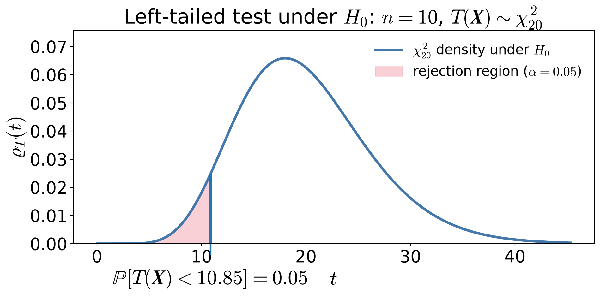
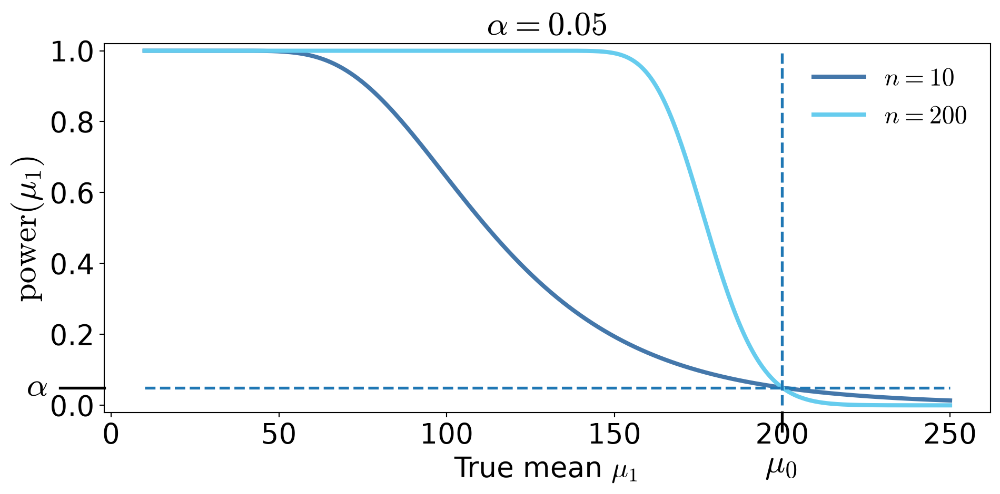
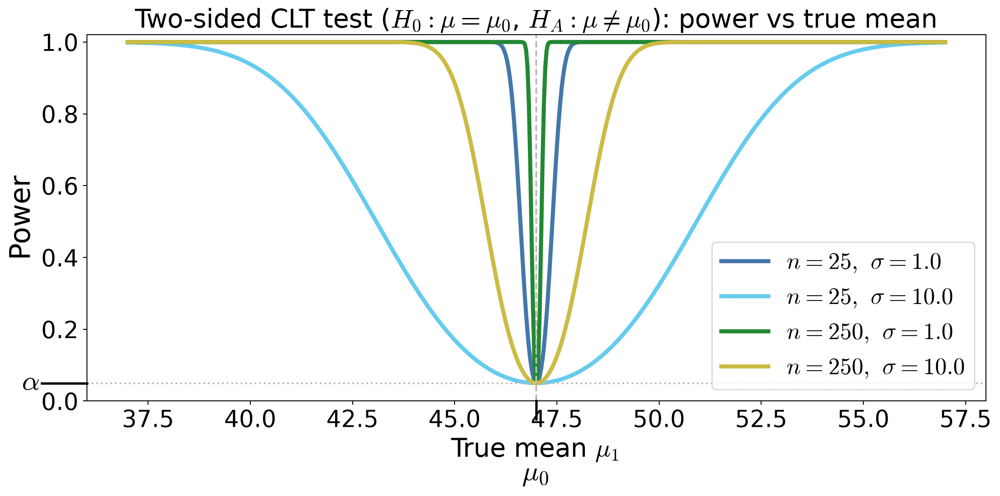
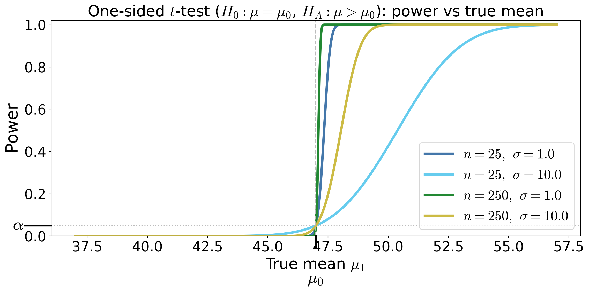
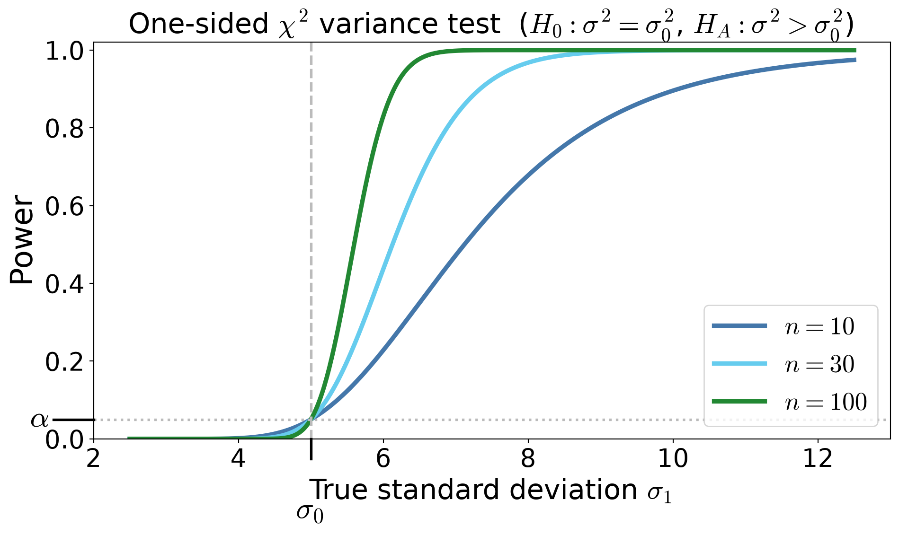

Spring 2026 material · revision for Spring 2027 pending
Hypothesis Testing
Casella & Berger Ch. 8
Assignment 4 due 3/13
Assignment 5 due 4/10
September 23, 2026
(CB §8.1–8.3; WMS §10.1–10.2)
Null hypothesis \(H_0\) — the default assumption, often of the form \(H_0: \theta = \theta_0\) or \(H_0: \theta \in \ct_0\)
Alternative hypothesis \(H_A\) — the alternative, often of the form \(H_A: \theta = \theta_1\) or \(H_A: \theta \in \ct_A\)
Test statistic \(T(\vX) = T_n(\vX) \in \ct\) — a function/summary of the data, \(\vX = (X_1, \ldots, X_n)\), used to assess \(H_0\)
Rejection region \(\RR \subseteq \ct\) — values of \(T(\vX)\) for which we reject \(H_0\)
Decision rule — reject \(H_0\) if \(T(\vX) \in \RR\)
Type I error \(\alpha\) — reasonable doubt, probability of falsely rejecting \(H_0\)
\(p\)-value — (under \(H_0\)) probability that the test statistic is at least as extreme as the observed value
Type II error \(\beta\) — probability of failing to reject \(H_0\) when \(H_A\) is true
Power \(1-\beta\) — probability of correctly rejecting \(H_0\)
Hypothesis testing is a formal way of deciding whether the data provide enough evidence to overturn a protected default assumption
We will use ideas from estimation, confidence intervals, and pivots
Suppose
\[ X_1,\dots,X_n \IIDsim \Exp(1/\mu), \qquad \Ex(X)=\mu \]
Here
\(X_i\) is the time between unexpected server failures (e.g., crashes/outages) for a particular service
The provider claims the mean time between failures is \(\mu_0 = 200\) hours
We want evidence that reliability has worsened, i.e. failures are happening more frequently
\[\text{Use the pivot } \frac{2n\barX_n}{\mu} \sim \chi^2_{2n}, \qquad \text{so that under } H_0: \mu = 200, \quad T(\vX) = \frac{2n\barX_n}{200} \sim \chi^2_{2n}\]
Choose \(\alpha = 0.05\) as the maximum tolerable risk of falsely accusing underperformance
Left-tailed test:
\[\RR = [0, \chi^2_{2n,1-\alpha}) = [0, 10.85)\]
Equivalently, reject when
\[\barX_n < \frac{200}{2n}\,\chi^2_{2n,1-\alpha}\]
No data has been observed yet

Let
\[n=10,\qquad \barx_n=176\]
Then \[t_{\text{obs}}=\frac{2(10)(176)}{200}=17.60\]
The \(p\)-value is
\[p=\Prob\big(\chi^2_{20} \le 17.60\big) \approx 0.39\]
Reject \(H_0\) iff \(p\le \alpha\)So we do NOT reject \(H_0\) at the \(\alpha=0.05\) level. This is not the same as accepting \(H_0\)!
Type I error \(\alpha\):
Falsely conclude that reliability has worsened when the true mean time between failures is 200 hours \[\alpha=\Prob(\text{reject }H_0\mid \mu=200)\]
Type II error \(\beta(\mu_1)\) (for some \(\mu_1<200\)):
Fail to detect that the system is less reliable than claimed \[ \beta(\mu_1) = \Prob(\text{fail to reject }H_0 \mid \mu = \mu_1) \]
Power function \(\power(\mu_1)\)
The probability of correctly detecting reduced reliability (for some \(\mu_1<200\))
\[ \power(\mu_1) = \Prob(\text{reject }H_0 | \mu = \mu_1) = 1-\beta(\mu_1) \]
From Step 3, we reject \(H_0\) when
\[T(\boldsymbol{X})=\frac{2n\barX_n}{200} < \chi^2_{2n,1-\alpha}\]
If the true mean is actually \(\mu_1\), then \[\frac{200 T(\boldsymbol{X}) }{\mu_1} = \frac{2n\barX_n }{\mu_1} \sim\chi^2_{2n}\]
, the power function is \[\begin{align*} \power(\mu_1) &= \Prob\!\left(T(\boldsymbol{{X}}) < \chi^2_{2n,\,1-\alpha}\mid \mu=\mu_1\right) = \Prob\!\left(\frac{200\,T(\boldsymbol{X})}{\mu_1} \sim \chi^2_{2n} < \frac{200\,\chi^2_{2n,\,1-\alpha}}{\mu_1} \,\middle|\, \mu=\mu_1\right)\\ &\qquad \qquad \text{increases as $\mu_1$ decreases.} \end{align*}\]

Do not use the power curve to decide whether to reject after seeing the data
Power is about the test procedure, not about the observed data
\[\begin{gather*} H_0 \text{ null hypothesis (default, innocence) in terms of } \theta \\ H_A \text{ alternative hypothesis (evidence, guilt) in terms of } \theta \end{gather*}\]
\(H_0\) and \(H_A\) are mutually exclusive
| Reject \(H_0\) | Do Not Reject \(H_0\) | |
|---|---|---|
| \(H_0\) true | Type I error probability \(\alpha\) |
Correct |
| \(H_0\) false | Correct probability \(\power(\theta)\) |
Type II error probability \(\beta(\theta)\) |
| Confidence Interval | Hypothesis Test |
|---|---|
| An interval of plausible values | A reject / do not reject decision |
| Random interval | Random decision |
| Statement about \(\theta\) | Statement about \(H_0\) |
| No special value privileged | Tests a specific value \(\theta_0\) |
| Both Use | Meaning |
|---|---|
| Level \(\alpha\) | Willingness to be wrong |
| Pivot / test statistic | Standardized measure of evidence |
| Sampling distribution | Controls coverage / Type I error |
\[ \theta_0 \text{ rejected at level } \alpha \iff \theta_0 \notin \text{corresponding } (1-\alpha) \text{ confidence interval} \]
%%{init: {"themeVariables":{"fontSize":"36px"}}}%%
flowchart LR
D1T["Design Phase<br/>(Before Data)"]
D2T["Data Phase<br/>(After Data)"]
subgraph D1 [ ]
A[Model<br/>Assumptions]
B[Choose Test<br/>Statistic]
C[Sampling<br/>Distribution<br/>under null]
D["Fix Rejection<br/>Region<br/>(size α)"]
end
subgraph D2 [ ]
E[Observe<br/>Data]
F[Compute<br/>Test<br/>Statistic]
G[Decision:<br/>Reject or Not]
end
D1T --> A
D2T --> E
A --> B --> C --> D --> E --> F --> G
style D1 fill:transparent,stroke:#888,stroke-width:2px
style D2 fill:transparent,stroke:#888,stroke-width:2px
style D1T fill:transparent,stroke:transparent,font-weight:bold
style D2T fill:transparent,stroke:transparent,font-weight:bold
Everything in the Design Phase defines the procedure
The Data Phase only applies the pre-defined rule
The power curve describes the procedure, not the observed dataset
| Quantity | Who chooses it? |
|---|---|
| \(H_0\) and \(H_A\) | Us |
| Form of test statistic \(T\) | Us |
| Significance level \(\alpha\) | Us |
| Sample size \(n\) | Us |
| Rejection region \(\RR\) | Determined by \(\alpha\) & \(n\) (once \(H_0\), \(T\) are fixed) |
| Type II error \(\beta(\theta)\) \(\power(\theta)\) |
Determined by \(\alpha\), \(n\), & \(\theta\) |
Once \(H_0\) and \(T\) are fixed:
| Quantity | Why? |
|---|---|
| Test statistic value | Computed from sample |
| p-value | Function of statistic |
| Decision (reject / not reject) | Depends on statistic |
| Type | \(H_0\) | \(H_A\) |
|---|---|---|
| Two-sided | \(\theta = \theta_0\) | \(\theta \ne \theta_0\) |
| One-sided (upper) | \(\theta = \theta_0\) | \(\theta > \theta_0\) |
| One-sided (lower) | \(\theta = \theta_0\) | \(\theta < \theta_0\) |
| Two simple values | \(\theta = \theta_0\) | \(\theta = \theta_1\) |
Simple: a single \(\theta\) value
Composite: multiple \(\theta\) values
| Version A | Version B | |
|---|---|---|
| \(H_0:\ \theta = \theta_0\) | \(H_0:\ \theta \ge \theta_0\) | Same? |
| \(H_A:\ \theta < \theta_0\) | \(H_A:\ \theta < \theta_0\) |
The test is calibrated at the boundary:
\[\begin{align*} \text{A}: \quad &\Prob(\text{Reject } H_0 \mid \theta_0)=\alpha \\ \text{B}: \quad &\sup_{\theta \ge \theta_0} \Prob(\text{Reject } H_0 \mid \theta) = \alpha \end{align*}\]
(CB §8.1–8.3; WMS §10.3-10.9)
Building on the established framework
| Words | \(H_0\) | \(H_A\) |
|---|---|---|
| “Is the mean different from 10?” | \(\theta = 10\) | \(\theta \ne 10\) |
| “Is the mean greater than 10?” | \(\theta = 10\) | \(\theta > 10\) |
| “Is the defect rate below 5%?” | \(\theta = 0.05\) | \(\theta < 0.05\) |
| “Has the process changed?” | \(\theta = \theta_0\) | \(\theta \ne \theta_0\) |
| “Our average time between failures is greater than 200 hours” | \(\mu = 200\) | \(\mu > 200\) |
| “Your average time between failures is less than 200 hours” | \(\mu = 200\) | \(\mu < 200\) |
| “Our job placement rate is 90%, not 70%” (both simple) | \(p = 0.7\) | \(p = 0.9\) |
The \(p\)-value is the probability, computed under \(H_0\), of observing a test statistic at least as extreme as the one observed, assuming \(H_0\) is true
If \(T\) is the test statistic and \(t_{\text{obs}}\) is the observed value, then
Right-tailed test: \(\quad p\text{-value} = \Prob_{H_0}(T \ge t_{\text{obs}})\)
Left-tailed test: \(\quad p\text{-value} = \Prob_{H_0}(T \le t_{\text{obs}})\)
Two-sided test: \(\quad p\text{-value} = \Prob_{H_0}(|T| \ge |t_{\text{obs}}|)\)
Compute \(p\)-values after setting the significance level \(\alpha\), rather than choosing \(\alpha\) after seeing the data
Changing \(\alpha\) after seeing the \(p\)-value is a form of data snooping
Suppose \(X_1,\dots,X_n\) IID with \(\Ex(X_i) = \mu\), \(\var(X_i) = \sigma^2\) with large \(n\)
Test \(H_0: \mu = \mu_0\) against \(H_A: \mu \ne \mu_0\)
Test statistic \(\displaystyle Z_n(\vX) = \frac{\barX_n - \mu_0}{S_n/\sqrt{n}} \appxsim \Norm(0,1) \text{ for large } n \text{ under } H_0\)
Rejection region \(\RR = (-\infty, -z_{\alpha/2}) \cup (z_{\alpha/2}, \infty)\)
Power function — the probability of rejecting \(H_0\) when the true mean is \(\mu_1\)
\[ \power(\mu_1)= \Prob(|Z_n(\vX)|>z_{\alpha/2} \mid \mu = \mu_1) = 1 - \Phi\!\left(z_{\alpha/2} - \frac{\mu_1-\mu_0}{\sigma/\sqrt{n}}\right) + \Phi\!\left(-z_{\alpha/2} - \frac{\mu_1-\mu_0}{\sigma/\sqrt{n}}\right ) \]

Power is \(\Prob(\text{reject} \mid \theta)\)
It is not \(\Prob(\theta \mid \text{data})\)
Power describes the test design, not the evidence in this sample
Suppose \(X_1,\dots,X_n\) IID with \(X_i \sim \Norm(\mu,\sigma^2)\)
Test \(H_0: \mu \le \mu_0\) against \(H_A: \mu > \mu_0\)
Test statistic \(\displaystyle T_n(\vX) = \frac{\barX_n - \mu_0}{S_n/\sqrt{n}} \sim t_{n-1} \text{ under } \mu=\mu_0\)
Rejection region \(\RR = (t_{n-1,\alpha}, \infty)\)
Power function — the probability of rejecting \(H_0\) when the true mean is \(\mu_1\)
\[\begin{multline*} T_n(\vX) \sim t_{n-1}(\delta) \text{ for } \delta = \frac{\mu_1 - \mu_0}{\sigma/\sqrt{n}} \\ \implies \power(\mu_1) = \Prob(T_n(\vX) > t_{n-1,\alpha} \mid \mu=\mu_1) = 1 - F_{t_{n-1}(\delta)}\!\left(t_{n-1,\alpha}\right) \end{multline*}\]
where \(F_{t_{n-1}(\delta)}\) is the CDF of the noncentral t distribution with \(n-1\) degrees of freedom and noncentrality parameter \(\delta\)

Suppose \(X_1,\dots,X_n\) IID with \(X_i \sim \Norm(\mu,\sigma^2)\).
Test \(H_0: \sigma^2 = \sigma_0^2\) against \(H_A: \sigma^2 > \sigma_0^2\)
Pivot / test statistic \(\displaystyle T_n(\vX) = \frac{(n-1)S_n^2}{\sigma_0^2} \sim \chi^2_{n-1} \text{ under } H_0\)
Rejection region \(\RR = (\chi^2_{n-1,\alpha}, \infty)\)
Power function
\[
\power(\sigma_1)
=
\Prob\!\left(
T_n(\vX) > \chi^2_{n-1,\alpha}\mid \sigma = \sigma_1
\right)
=
\Prob\!\left(
\chi^2_{n-1} > \frac{\sigma_0^2}{\sigma_1^2}\chi^2_{n-1,\alpha}
\right)
\]
\(p\)-value for observed \(t_{\text{obs}}\) is \(p = \Prob(\chi^2_{n-1} \ge t_{\text{obs}})\)

\(\exstar\)Construct small sample size one-sided and two-sided tests for the mean of an exponential distribution and sketch the power curves
(CB §8.2–8.3; WMS §10.10-10.11)
We have constructed tests, and we have computed their size and power, but
Among all tests with size \(\alpha\), which test has the highest power against a fixed alternative?
To compare two hypotheses
\[ H_0: \theta = \theta_0 \qquad \text{vs} \qquad H_A: \theta = \theta_A \]
Consider the likelihood ratio statistic constructed from the ratio of the likelihood values based on data \(\vX = (X_1,\dots,X_n)\): \[ \Lambda(\vX) = \frac{L(\theta_0 \mid \vX)} {L(\theta_A \mid \vX)} = \frac{\varrho_{\vX}(\vX \mid \theta_0)}{\varrho_{\vX}(\vX \mid \theta_A)} \]
If the data are much more likely under \(H_A\) than under \(H_0\), the ratio \(\Lambda(\vX)\) will be small, and this is evidence against \(H_0\)
Test
\[ H_0:\theta=\theta_0 \qquad\text{vs}\qquad H_A:\theta=\theta_A \]
Among all tests with size \(\alpha\), the test that rejects for sufficiently small likelihood ratio is most powerful
Reject \(H_0\) when
\[ \Lambda(\vX) = \frac{L(\theta_0 \mid \vX)} {L(\theta_A \mid \vX)} < k \]
where \(k\) is chosen so that
\[ \Prob(\text{reject }H_0 \mid \theta = \theta_0)= \Prob(\Lambda(\vX) < k \mid \theta = \theta_0) = \alpha \]
A test that is most powerful for all alternatives in a class is called uniformly most powerful (UMP)
\[ H_0:\mu=\mu_0 \qquad H_A:\mu=\mu_A \quad \text{with } \mu_A > \mu_0 \]
Suppose \(X_1,\dots,X_n \IIDsim \Norm(\mu,\sigma^2)\). The likelihood ratio test statistic based on this data, \(\vX = (X_1,\dots,X_n)\), is
\[ \Lambda = \frac{L(\mu_0 \mid \vX)}{L(\mu_A \mid \vX)} \]
Because the logarithm is increasing, it is convenient to work with
\[\begin{multline*} \log \Lambda(\vX) = \log \bigl(L(\mu_0 \mid \vX)\bigr)-\log L(\mu_A \mid \vX) \\ = -\frac{1}{2\sigma^2} \sum_{i=1}^n (X_i-\mu_0)^2 + \frac{1}{2\sigma^2} \sum_{i=1}^n (X_i-\mu_A)^2 = \cdots \\ = \frac{n(\mu_0-\mu_A)}{\sigma^2} \left(\barX_n - \frac{\mu_0+\mu_A}{2}\right) \end{multline*}\]
\[\begin{equation*} \log \Lambda(\vX) = \frac{n(\mu_0-\mu_A)}{\sigma^2} \left(\barX_n - \frac{\mu_0+\mu_A}{2}\right) \end{equation*}\]
Reject when \(\barX_n > c\) for some cut-off \(c\), which is chosen so that
\[ \Prob(\barX_n>c \mid \mu=\mu_0)=\alpha, \qquad \text{i.e., } c = \mu_0 + z_\alpha \frac{\sigma}{\sqrt n} \]
Because the Type-I error is computed assuming \(H_0\) is true, the cutoff does not depend on \(\mu_A\)
The likelihood ratio test is most powerful among all tests with size \(\alpha\) for testing \(H_0: \mu = \mu_0\) vs \(H_A: \mu = \mu_A\) with \(\mu_A > \mu_0\) when \(\sigma\) is known
The likelihood ratio test therefore reproduces the classical \(z\)-test for the mean of a normal distribution with known variance
More generally, for hypotheses
\[ H_0:\theta \in \ct_0 \qquad\text{vs}\qquad H_A:\theta \in \ct_A \]
the likelihood ratio statistic based on data \(\vX = (X_1,\dots,X_n)\) is
\[ \Lambda(\vX) = \frac{\sup_{\theta\in \ct_0} L(\theta \mid \vX)} {\sup_{\theta\in \ct} L(\theta \mid \vX)} =\frac{\text{best fit under }H_0} {\text{best fit over the entire parameter space}} \]
Reject for small \(\Lambda\)
\[ H_0:\mu=\mu_0 \qquad H_A:\mu\ne \mu_0 \]
Suppose \(X_1,\dots,X_n \IIDsim \Norm(\mu,\sigma^2)\). The likelihood ratio test statistic is
\[ \Lambda(\vX) = \frac{\sup_{\mu=\mu_0} L(\mu \mid \vX)} {\sup_{\mu\in\reals} L(\mu \mid \vX)} = \frac{L(\mu_0 \mid \vX)}{L(\barX_n \mid \vX)}, \qquad \text{since the MLE of $\mu$ is $\barX_n$ for IID normal data} \]
Because the logarithm is increasing, it is convenient to work with
\[\begin{multline*} \log \Lambda(\vX) = \log L(\mu_0 \mid \vX)-\log L(\barX_n \mid \vX) \\ = -\frac{1}{2\sigma^2}\sum_{i=1}^n (X_i-\mu_0)^2 +\frac{1}{2\sigma^2}\sum_{i=1}^n (X_i-\barX_n)^2 = \cdots = -\frac{n}{2\sigma^2}(\barX_n-\mu_0)^2 \end{multline*}\]
\[\begin{equation*} \log \Lambda(\vX) = -\frac{n}{2\sigma^2}(\barX_n-\mu_0)^2 \end{equation*}\]
Reject when \(\Lambda(\vX)\) is small \(\iff |\barX_n-\mu_0|\) is large, equivalently, reject when
\[ \left|\frac{\barX_n-\mu_0}{\sigma/\sqrt n}\right| > z_{\alpha/2} \]
The cutoff is chosen so that
\[ \Prob\!\left(\left|\frac{\barX_n-\mu_0}{\sigma/\sqrt n}\right|>z_{\alpha/2}\ \middle|\ \mu=\mu_0\right)=\alpha, \]
which depends only on \(\mu_0\), \(\sigma\), \(n\), and \(\alpha\)
The likelihood ratio test therefore reproduces the classical two-sided \(z\)-test for the mean of a normal distribution with known variance
\[ H_0:\mu=\mu_0 \qquad \text{vs} \qquad H_A:\mu\ne\mu_0 \]
Suppose \(X_1,\dots,X_n \IIDsim \Norm(\mu,\sigma^2)\)
Parameter vector: \(\theta=(\mu,\sigma^2), \qquad \sigma^2\) is a nuisance parameter
Log-likelihood: \[ \ell(\mu,\sigma^2) = -\frac{n}{2}\log (\sigma^2) - \frac{1}{2\sigma^2} \sum_{i=1}^n (X_i-\mu)^2 + \text{constants} \]
Maximizing gives \[\begin{gather*} \mu_{\MLE} = \barX_n, \qquad \sigma_{\MLE}^2 = \frac{1}{n}\sum_{i=1}^n (X_i-\barX_n)^2 = \frac{n-1}{n} S_n^2 \\ \sup_{\mu,\sigma^2} \ell(\mu,\sigma^2) = -\frac{n}{2}\log (\sigma^2_{\MLE}) - \frac{n}{2} + \text{constants} \end{gather*}\]
Under \(\mu=\mu_0\), \[\begin{gather*} \sigma_{0,\MLE}^2 = \frac{1}{n}\sum_{i=1}^n (X_i-\mu_0)^2 = (\barX_n - \mu_0)^2 + \frac 1n \sum_{i=1}^n (X_i-\barX_n)^2 = (\barX_n - \mu_0)^2 + \sigma_{\MLE}^2 \\ \sup_{\sigma^2} \ell(\mu_0,\sigma^2) = -\frac{n}{2}\log (\sigma^2_{0,\MLE}) - \frac{n}{2} + \text{constants} \end{gather*}\]
\[\begin{gather*} \log \bigl(\Lambda(\vX) \bigr) = \sup_{\sigma^2} \ell(\mu_0,\sigma^2_{0,\MLE}) - \sup_{\mu,\sigma^2} \ell(\mu,\sigma^2_{\MLE}) = -\frac{n}{2}\log (\sigma^2_{0,\MLE}) + \frac{n}{2}\log (\sigma^2_{\MLE}) \\ \Lambda(\vX) = \left(\frac{\sigma^2_{0,\MLE}}{\sigma^2_{\MLE}}\right)^{-n/2} \end{gather*}\]
Therefore \[\begin{align*} \frac{\sigma_{0,\MLE}^2}{\sigma_{\MLE}^2} & = \frac{(\barX_n - \mu_0)^2 + \sigma_{\MLE}^2}{\sigma_{\MLE}^2} = \frac{(\barX_n-\mu_0)^2} {(n-1) S_n^2/n} + 1 = \frac{T_n^2}{n-1} + 1\\ \Lambda(\vX) & = \left( 1 + \frac{T_n^2}{n-1} \right)^{-n/2} \end{align*}\]
where \(\displaystyle T_n = \frac{\barX_n-\mu_0}{S/\sqrt n}\) is the familiar \(t\)-statistic
The likelihood ratio depends only on the \(t\)-statistic for testing \(H_0: \mu = \mu_0\) vs \(H_A: \mu \ne \mu_0\)
The nuisance parameter \(\sigma^2\) has disappeared
\(\exstar\) Show that the LRT for testing \(H_0: \mu = \mu_0\) vs \(H_A: \mu = \mu_1\) with \(\mu_1 > \mu_0\) and \(\sigma\) unknown is the familar one-sided \(t\)-test as
\[ \Lambda(\vX) = \frac{\displaystyle \sup_{\theta\in \ct_0} L(\theta \mid \vX)} {\displaystyle \sup_{\theta\in \ct} L(\theta \mid \vX)} \]
Under regularity conditions,
\[ -2 \log \Lambda \dto \chi^2_{\df} \] where the degrees of freedom is \[ \df = \dim(\text{full model}) - \dim(\text{null model}) \]
\[ \Lambda(\vX) = \frac{\sup_{\theta \in \ct_0} L(\theta \mid \vX)} {\sup_{\theta \in \ct} L(\theta \mid \vX)} \qquad \text{Reject when $\Lambda(\vX)$ is small} \]
Even though
We already know the \(z\), \(t\), and other tests
We still need to choose the rejection region cut-off to get the desired size \(\alpha\)
However, the LRT
Is a unifying concept
Handles composite hypotheses
Reproduces \(z\), \(t\), \(\chi^2\), \(F\) tests
Scales to multi-parameter models
Has large-sample theory (Wilks)
\(\exstar\) WMS 10.105, 10.106, 10.112
\(\exstar\) CB 8.29, 8.40, 8.41
\[ H_0:\theta=\theta_0, \qquad H_A:\theta=\theta_1 \]
Let the joint densities of \(\vX\) under \(\theta_0\) and \(\theta_1\) be \(\varrho_0(\vx)\) and \(\varrho_1(\vx)\).
Among all tests with size \(\alpha\), the likelihood ratio test is most powerful.
Given data \(\vX\), reject \(H_0\) when \[ \Lambda(\vx) = \frac{L(\theta_0\mid \vx)}{L(\theta_1\mid \vx)} = \frac{\varrho_0(\vx)}{\varrho_1(\vx)} < k, \qquad\text{i.e.}\qquad \varrho_0(\vx)-k\varrho_1(\vx)<0 \] where \(k\) is chosen so that \[ \Prob(\text{Reject }H_0\mid \theta=\theta_0)=\alpha \]
For convenience of notation, we defined rejection regions in terms of data, \(\vX\), rather than test statistics. Let the likelihood ratio test have rejection region: \[ \RR^{\LRT}=\{\vX:\ \varrho_0(\vX)-k\varrho_1(\vX)<0\} \] Thus it rejects with indicator \(\indic(\vX\in \RR^{\LRT})\)
Let \(T(\vX)\) be any other test statistic with rejection region \(\RR\) (for data \(\vX\))
Assume this competing test has size at most \(\alpha\):
\[\begin{multline*} \int \indic(\vx\in\RR)\,\varrho_0(\vx)\,\dif\vx = \Ex [ \indic(\vX\in\RR) \mid \theta=\theta_0] = \Prob(\vX\in\RR\mid \theta=\theta_0) \\ \le \alpha = \Prob(\vX\in\RR^{\LRT}\mid \theta=\theta_0) = \Ex [ \indic(\vX\in\RR^{\LRT}) \mid \theta=\theta_0] = \int \indic(\vx\in\RR^{\LRT})\,\varrho_0(\vx)\,\dif\vx \end{multline*}\]
Consider the integral \[ I = \int \underbrace{\bigl[\indic(\vx\in\RR^{\LRT})-\indic(\vx\in\RR)\bigr]}_{\text{which test is rejecting?}} \underbrace{\bigl[\varrho_0(\vx)-k\varrho_1(\vx)\bigr]}_{\LRT \text{ will reject if this is negative}}\,\dif\vx \]
Check pointwise signs:
If \(\vx\in\RR^{\LRT}\) but \(\vx\notin\RR\), then \(\indic(\vx\in\RR^{\LRT})-\indic(\vx\in\RR)=1\) and \(\varrho_0(\vx)-k\varrho_1(\vx) < 0\), so the product is \(\le 0\)
If \(\vx\notin\RR^{\LRT}\) but \(\vx\in\RR\), then \(\indic(\vx\in\RR^{\LRT})-\indic(\vx\in\RR)=-1\) and \(\varrho_0(\vx)-k\varrho_1(\vx) \ge 0\), so the product is also \(\le 0\)
Otherwise the difference of indicators is \(0\).
Hence the integrand is everywhere \(\le 0\), so \(I\le 0\)
Expand: \[\begin{multline*} I = \int\bigl[\indic(\vx\in\RR^{\LRT})-\indic(\vx\in\RR)\bigr]\varrho_0(\vx)\,\dif\vx \\ - k\int\bigl[\indic(\vx\in\RR^{\LRT})-\indic(\vx\in\RR)\bigr]\varrho_1(\vx)\,\dif\vx \le 0 \end{multline*}\]
The size condition implies \[\begin{multline*} \int\bigl[\indic(\vx\in\RR^{\LRT})-\indic(\vx\in\RR)\bigr]\varrho_0(\vx)\,\dif\vx \\ = \Prob(\vX\in\RR^{\LRT}\mid \theta=\theta_0)-\Prob(\vX\in\RR\mid \theta=\theta_0) = \alpha - \Prob(\vX\in\RR\mid \theta=\theta_0) \ge 0 \end{multline*}\]
Therefore, since \(I\le 0\), \[ k\int\bigl[\indic(\vx\in\RR^{\LRT})-\indic(\vx\in\RR)\bigr]\varrho_1(\vx)\,\dif\vx \ge \int\bigl[\indic(\vx\in\RR^{\LRT})-\indic(\vx\in\RR)\bigr]\varrho_0(\vx)\,\dif\vx \ge 0, \]
Because \(k>0\), we have \[ \int\bigl[\indic(\vx\in\RR^{\LRT})-\indic(\vx\in\RR)\bigr]\varrho_1(\vx)\,\dif\vx \ge 0 \]
That is, \[\begin{multline*} \power^{\LRT}(\theta_1) = \Prob(\vX \in \RR^{\LRT} \mid \theta=\theta_1) = \int \indic(\vx\in\RR^{\LRT})\,\varrho_1(\vx)\,\dif\vx \\ \ge \int \indic(\vx\in\RR)\,\varrho_1(\vx)\,\dif\vx = \Prob(\vX \in \RR \mid \theta=\theta_1)= \power(\theta_1) \end{multline*}\]
Therefore \(\power^{\LRT}(\theta_1)\ge \power(\theta_1)\) for every test with size at most \(\alpha\) so the likelihood ratio test is most powerful
\(\square\)
© 2027 Fred J. Hickernell · MATH 563 · Prior-semester material awaiting revision